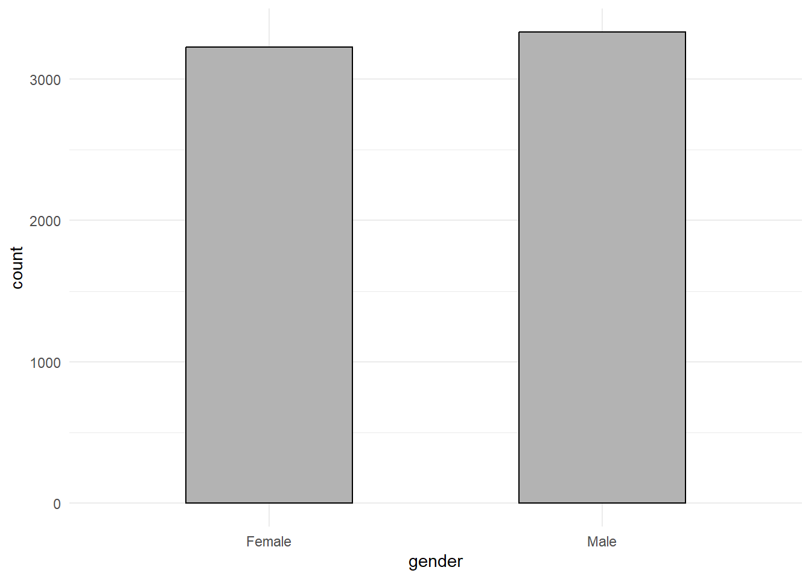
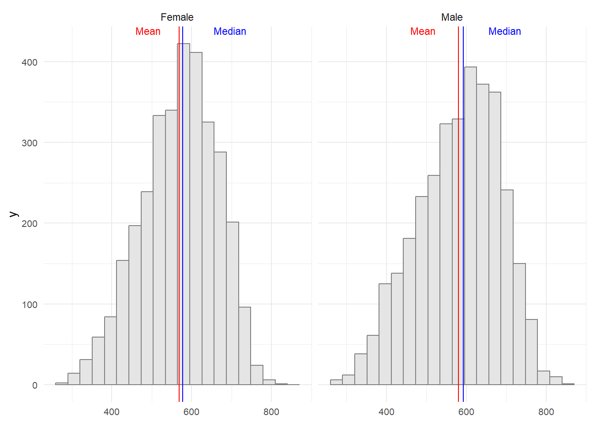
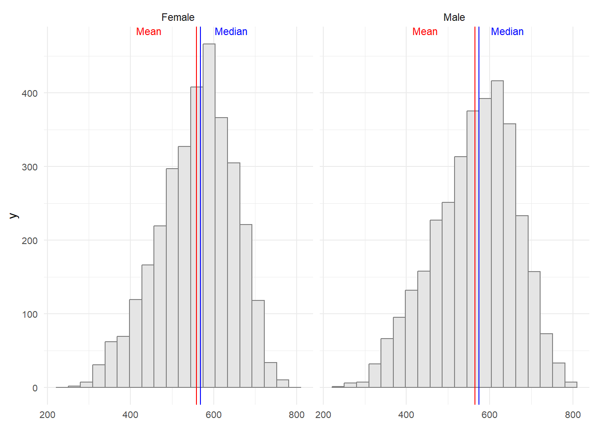
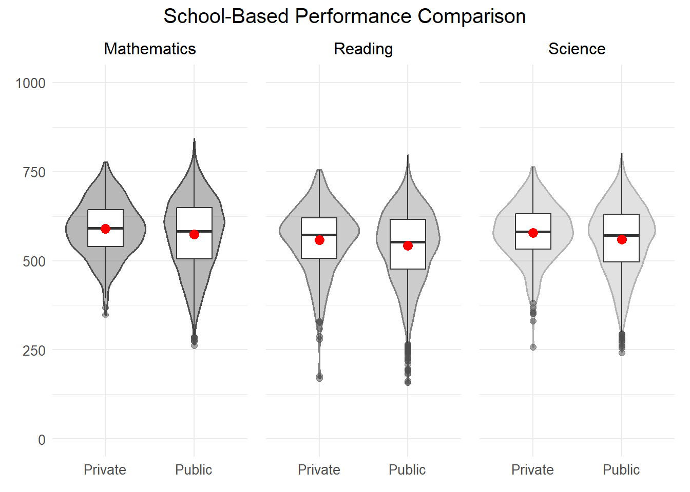

pacman::p_load(tidyverse, haven, patchwork)Take-home Exercise 1: Investigating Student Performance with Data Visualisations
1 Overview
The OECD Programme for International Student Assessment (PISA) did a deep dive into how 15-year-old students are doing in reading, math, and science. They didn’t just stop there – they also dug into students’ backgrounds, home situations, and school factors that could shake things up. PISA is like the gold standard when it comes to checking out how well students are really learning on a global scale. The results spill the beans on the quality and fairness of learning achievements worldwide, giving educators and policy folks the lowdown on what’s working in different countries.
But PISA isn’t just about the numbers; it’s about creating a common ground and getting people to team up and use that data. The whole idea is to get schools and policymakers to stop sizing themselves up against their own kind and start looking outwards. PISA wants them to peek at what teachers, schools, and policymakers are doing around the world and learn a thing or two.
Fast-forward to 2022, and PISA is still at it. They’ve got eight questionnaires floating around, getting the scoop from different education big shots – students, teachers, parents, and school principals. It’s like a global report card but with a whole lot more details.
2 Data Preparation
2.1 Importing packages
In this take home exercise we are going to utilise several package
- Tidyverse (to wrangle and plot our data)
- Haven (to read our dataset from sas data type)
- Patchwork (to plot multiple plot in the same figure)
2.2 Importing dataset
Importing the data in sas data type
stu_qqq <- read_sas('data/cy08msp_stu_qqq.sas7bdat')Filtering the data to singapore
stu_qqq_SG <- stu_qqq %>%
filter(CNT == "SGP")Export the filtered dataset to rds to ease further data importing
write_rds(stu_qqq_SG, 'data/stu_qqq_SG.rds')Read the exported rds
stu_qqq_SG <- read_rds('data/stu_qqq_SG.rds')2.3 Variable Preparations
In preparing for our analysis, we’ll filter out the columns we need and focus on six variables:
school_type(Renamed from STRATUM)gender(Renamed from ST004D01T)math(Average of 10 math scores)science(Average of 10 science scores)reading(Average of 10 reading scores, renamed from ‘read’)social_economic(Renamed from ESCS)
Additionally, we’ll recode the answers of questions to more descriptive measures and adjust the data types of the columns for clarity and consistency.
For example, if the gender column uses numerical codes, we can replace them with descriptive labels (e.g., 1 for male, 2 for female can be recoded as ‘Male’ and ‘Female’).
Lastly, we’ll ensure that the data types of each column align with the nature of the information they hold (e.g., converting numerical columns to appropriate numeric types).
stu_filtered <- stu_qqq_SG %>%
mutate(math = rowMeans(select(stu_qqq_SG,
PV1MATH,PV2MATH,PV3MATH,PV4MATH,PV5MATH,PV6MATH,PV7MATH,PV8MATH,PV9MATH,PV10MATH)),
science = rowMeans(select(stu_qqq_SG,
PV1SCIE,PV2SCIE,PV3SCIE,PV4SCIE,PV5SCIE,PV6SCIE,PV7SCIE,PV8SCIE,PV9SCIE,PV10SCIE)),
reading = rowMeans(select(stu_qqq_SG,
PV1READ,PV2READ,PV3READ,PV4READ,PV5READ,PV6READ,PV7READ,PV8READ,PV9READ,PV10READ))
) %>%
select(STRATUM,ST004D01T,math,science,reading,ESCS) %>%
rename(c(school_type = "STRATUM",
gender = "ST004D01T",
socio_economic = "ESCS")) %>%
mutate(gender = recode(gender,
"1" = "Female",
"2" = "Male"),
school_type = recode(school_type,
"SGP01" = "Public",
"SGP03" = "Private"))
stu_filtered$school_type <- as.factor(stu_filtered$school_type)
stu_filtered$gender <- as.factor(stu_filtered$gender)2.4 Overview of the Data-set
Here is the overview of the data-set that we are going to use for the analysis:
glimpse(stu_filtered)Rows: 6,606
Columns: 6
$ school_type <fct> Public, Public, Public, Public, Public, Public, Public,…
$ gender <fct> Female, Male, Male, Male, Female, Female, Male, Male, F…
$ math <dbl> 605.2533, 689.9528, 676.7768, 401.0528, 436.1151, 518.1…
$ science <dbl> 639.7873, 672.0703, 660.0384, 343.6425, 479.2390, 476.0…
$ reading <dbl> 667.4296, 627.6078, 582.9252, 361.3969, 475.6763, 431.4…
$ socio_economic <dbl> 0.1836, 0.8261, -1.0357, -0.9606, 0.0856, 0.1268, -0.01…2.5 Handling Missing Values
Now, we are going through our data and getting rid of rows that are missing some info. The main reason for doing this is because later on, we want to make our variables easier to understand. If there are blank spots in our data columns, it might mess up the way we simplify things if a value accidentally ends up in a spot that was supposed to be blank.
We use the is.na() to spot those gaps in our data, and then sum() helps us count how many times these missing values pop up. It’s all part of making our data more user-friendly.
sum(is.na(stu_filtered$school_ID))[1] 0sum(is.na(stu_filtered$gender))[1] 0sum(is.na(stu_filtered$math))[1] 0sum(is.na(stu_filtered$science))[1] 0sum(is.na(stu_filtered$reading))[1] 0sum(is.na(stu_filtered$socio_economic))[1] 47The variable with missing values is: socio_economic.
Now, we are going to drop variable which contains missing values using ‘drop_na()’
stu_filtered <- drop_na(stu_filtered,socio_economic)
stu_filtered# A tibble: 6,559 × 6
school_type gender math science reading socio_economic
<fct> <fct> <dbl> <dbl> <dbl> <dbl>
1 Public Female 605. 640. 667. 0.184
2 Public Male 690. 672. 628. 0.826
3 Public Male 677. 660. 583. -1.04
4 Public Male 401. 344. 361. -0.961
5 Public Female 436. 479. 476. 0.0856
6 Public Female 518. 476. 431. 0.127
7 Public Male 708. 647. 704. -0.0154
8 Public Male 620. 573. 524. 1.16
9 Public Female 736. 691. 713. 1.47
10 Public Male 555. 548. 505. 0.520
# ℹ 6,549 more rowsThe output shows that 6,559 observations are retained.
3 Exploratory Data Analysis (EDA)
In this section 4 analysis will be performed to get insights and uncover truth of factors for Singapore student performances.
3.1 Student Performances
stu_grade <- stu_filtered %>%
select (math, science, reading)Show the code
# Density plot for Mathematics performance
Math_Plot <- ggplot(data = stu_grade, aes(x = math)) +
geom_density(color = "grey50", size = 0.6, fill= "grey50", alpha = 0.4) +
coord_cartesian(xlim = c(0,1000)) +
geom_vline(aes(xintercept = mean(math)), color = "red", alpha = 0.8, linewidth = 0.7, linetype = "dashed") +
annotate("text", x = 400, y = 0.0035, label = paste("Mean=", round(mean(stu_grade$math, na.rm=T), 2)), color = "red", size = 3) +
geom_vline(aes(xintercept = median(math)), color= "grey50", linewidth = 0.7, linetype = "solid") +
annotate("text", x = 800, y = 0.0035, label = paste("Median=", round(median(stu_grade$math, na.rm=T), 2)), color = "grey20", size = 3) +
geom_boxplot(width = 0.0005, fill = "white", alpha = 0.5, position = position_nudge(y = -0.0005)) +
theme_minimal() +
labs(title = "Distribution of Performance in Mathematics") +
theme(axis.title.x = element_blank(), axis.title.y = element_blank(), plot.title=element_text(size= 12), axis.text = element_text(size= 8))
# Density plot for Reading performance
Reading_Plot <- ggplot(data = stu_grade, aes(x = reading)) +
geom_density(color = "grey70", size = 0.6, fill= "grey70", alpha = 0.4) +
coord_cartesian(xlim = c(0,1000)) +
geom_vline(aes(xintercept = mean(reading)), color = "red", alpha = 0.8, linewidth = 0.7, linetype = "dashed") +
annotate("text", x = 400, y = 0.0035, label = paste("Mean=", round(mean(stu_grade$reading, na.rm=T), 2)), color = "red", size = 3) +
geom_vline(aes(xintercept = median(reading)), color= "grey50", linewidth = 0.7, linetype = "solid") +
annotate("text", x = 800, y = 0.0035, label = paste("Median=", round(median(stu_grade$reading, na.rm=T), 2)), color = "grey20", size = 3) +
geom_boxplot(width = 0.0005, fill = "white", alpha = 0.5, position = position_nudge(y = -0.0005)) +
theme_minimal() +
labs(title = "Distribution of Performance in Reading", y = "density") +
theme(axis.title.x = element_blank(), plot.title=element_text(size= 12), axis.text = element_text(size= 8))
# Density plot for Science performance
Science_Plot <- ggplot(data = stu_grade, aes(x = science)) +
geom_density(color = "grey30", size = 0.6, fill= "grey30", alpha = 0.4) +
coord_cartesian(xlim = c(0,1000)) +
geom_vline(aes(xintercept = mean(science)), color = "red", alpha = 0.8, linewidth = 0.7, linetype = "dashed") +
annotate("text", x = 400, y = 0.0035, label = paste("Mean=", round(mean(stu_grade$science, na.rm=T), 2)), color = "red", size = 3) +
geom_vline(aes(xintercept = median(science)), color= "grey50", linewidth = 0.7, linetype = "solid") +
annotate("text", x = 800, y = 0.0035, label = paste("Median=", round(median(stu_grade$science, na.rm=T), 2)), color = "grey20", size = 3) +
geom_boxplot(width = 0.0005, fill = "white", alpha = 0.5, position = position_nudge(y = -0.0005)) +
theme_minimal() +
labs(title = "Distribution of Performance in Science") +
theme(axis.title.x = element_blank(), axis.title.y = element_blank(), plot.title=element_text(size= 12), axis.text = element_text(size= 8))
# Arrange the plots
Math_Plot / Reading_Plot / Science_PlotBased on the provided figure, it appears that the performance distribution follows a normal pattern. However, there’s a SLIGHT VARIATION in performance levels, with math scores being higher than science, and science scores being higher than reading.
Moreover, it’s noticeable that the performance variance is quite substantial. This suggests that students in Singapore exhibit significant differences in their academic achievements. Several factors, including gender, school, and socioeconomic status, could contribute to these variations in performance.
3.2 Gender
The initial aspect we’ll examine is gender. From the distribution graph below, it is evident that the questionnaire shows a comparable number of male and female students.
ggplot(data = stu_filtered,
aes(x = gender)) +
geom_bar(width = 0.5,
color = "black",
fill = "grey70")+
theme_minimal()
Observing the graph below, it’s evident that there are minimal distinctions between male and female math scores. Males exhibit a slightly higher average and median score, though the differences are quite small
Show the code
# Prepare statistics on math scores by gender
stats <- data.frame(
gender = as.factor(c('Female','Male')),
mean = c(
mean(stu_filtered$math[stu_filtered$gender == "Female"]),
mean(stu_filtered$math[stu_filtered$gender == "Male"])
),
median = c(
median(stu_filtered$math[stu_filtered$gender == "Female"]),
median(stu_filtered$math[stu_filtered$gender == "Male"])
)
)
# Create a histogram plot of math scores by gender
ggplot(data = stu_filtered, aes(x = math)) +
geom_histogram(bins = 20, color = 'grey50', fill = 'grey90') +
facet_wrap(~ gender) +
geom_vline(data = stats, mapping = aes(xintercept = mean), color = "red") +
geom_vline(data = stats, mapping = aes(xintercept = median), color = "blue") +
annotate(
'text',
x = Inf, y = Inf, hjust = 7, vjust = 1, label = paste("Mean"), color = "red", size = 3
) +
annotate(
'text',
x = Inf, y = Inf, hjust = 3, vjust = 1, label = paste("Median"), color = "blue", size= 3
) +
theme_minimal() +
theme(axis.title.x = element_blank(), plot.title=element_text(size= 12), axis.text = element_text(size= 8)) 
Observing the graph provided, it’s evident that there are minimal disparities between male and female science scores. Males exhibit a slightly higher average and median score, though the differences are quite small.
Show the code
# Prepare statistics on science scores by gender
stats <- data.frame(
gender = as.factor(c('Female','Male')),
mean = c(
mean(stu_filtered$science[stu_filtered$gender == "Female"]),
mean(stu_filtered$science[stu_filtered$gender == "Male"])
),
median = c(
median(stu_filtered$science[stu_filtered$gender == "Female"]),
median(stu_filtered$science[stu_filtered$gender == "Male"])
)
)
# Create a histogram plot of science scores by gender
ggplot(data = stu_filtered, aes(x = science)) +
geom_histogram(bins = 20, color = 'grey50', fill = 'grey90') +
facet_wrap(~ gender) +
geom_vline(data = stats, mapping = aes(xintercept = mean), color = "red") +
geom_vline(data = stats, mapping = aes(xintercept = median), color = "blue") +
annotate(
'text',
x = Inf, y = Inf, hjust = 7, vjust = 1, label = paste("Mean"), color = "red", size = 3
) +
annotate(
'text',
x = Inf, y = Inf, hjust = 3, vjust = 1, label = paste("Median"), color = "blue", size= 3
) +
theme_minimal() +
theme(axis.title.x = element_blank(), plot.title=element_text(size= 12), axis.text = element_text(size= 8)) 
Based on the graph below, it’s noticeable that there are very slight distinctions between male and female reading scores. Males tend to have a slightly lower average and median score, though the differences are minimal.
Show the code
# Prepare statistics on reading scores by gender
stats <- data.frame(
gender = as.factor(c('Female','Male')),
mean = c(
mean(stu_filtered$reading[stu_filtered$gender == "Female"]),
mean(stu_filtered$reading[stu_filtered$gender == "Male"])
),
median = c(
median(stu_filtered$reading[stu_filtered$gender == "Female"]),
median(stu_filtered$reading[stu_filtered$gender == "Male"])
)
)
# Create a histogram plot of reading scores by gender
ggplot(data = stu_filtered, aes(x = reading)) +
geom_histogram(bins = 20, color = 'grey50', fill = 'grey90') +
facet_wrap(~ gender) +
geom_vline(data = stats, mapping = aes(xintercept = mean), color = "red") +
geom_vline(data = stats, mapping = aes(xintercept = median), color = "blue") +
annotate(
'text',
x = Inf, y = Inf, hjust = 7, vjust = 1, label = paste("Mean"), color = "red", size = 3
) +
annotate(
'text',
x = Inf, y = Inf, hjust = 3, vjust = 1, label = paste("Median"), color = "blue", size= 3
) +
theme_minimal() +
theme(axis.title.x = element_blank(), plot.title=element_text(size= 12), axis.text = element_text(size= 8)) Overall, can be concluded that student’s performances has SLIGHLTY VARIATION between both gender.
3.3 School
The student that was participating in this questionnaire was from 164 different school in Singapore
On the code above we are going to calculate the average of performance of student for private and public school across Singapore.
Followed by calculating the error or the differences between each school type average in Singapore.
Show the code
P7 <- ggplot(data = stu_filtered, aes(x = school_type, y = math)) +
geom_violin(color = "grey30", size = 0.6, fill = "grey30", alpha = 0.4) +
geom_boxplot(width = 0.4, outlier.colour = "grey30", outlier.size = 2,
outlier.alpha = 0.5, outlier.shape = 19) +
stat_summary(geom = "point", fun.y = "mean", colour = "red", size = 3) +
coord_cartesian(ylim = c(0, 1000)) +
scale_color_manual(values = c("#999999", "#E69F00")) +
theme_minimal() +
labs(title = "Mathematics") +
theme(
axis.title.x = element_blank(),
axis.title.y = element_blank(),
plot.title = element_text(size = 12, hjust = 0.5),
axis.text = element_text(size = 10)
)
P8 <- ggplot(data = stu_filtered, aes(x = school_type, y = reading)) +
geom_violin(color = "grey50", size = 0.6, fill = "grey50", alpha = 0.4) +
geom_boxplot(width = 0.4, outlier.colour = "grey30", outlier.size = 2,
outlier.alpha = 0.5, outlier.shape = 19) +
stat_summary(geom = "point", fun.y = "mean", colour = "red", size = 3) +
coord_cartesian(ylim = c(0, 1000)) +
theme_minimal() +
labs(title = "Reading") +
theme(
axis.title.x = element_blank(),
axis.title.y = element_blank(),
axis.text.y = element_blank(),
plot.title = element_text(size = 12, hjust = 0.5),
axis.text = element_text(size = 10)
)
P9 <- ggplot(data = stu_filtered, aes(x = school_type, y = science)) +
geom_violin(color = "grey70", size = 0.6, fill = "grey70", alpha = 0.4) +
geom_boxplot(width = 0.4, outlier.colour = "grey30", outlier.size = 2,
outlier.alpha = 0.5, outlier.shape = 19) +
stat_summary(geom = "point", fun.y = "mean", colour = "red", size = 3) +
coord_cartesian(ylim = c(0, 1000)) +
theme_minimal() +
labs(title = "Science") +
theme(
axis.title.x = element_blank(),
axis.text.y = element_blank(),
axis.title.y = element_blank(),
plot.title = element_text(size = 12, hjust = 0.5),
axis.text = element_text(size = 10)
)
(P7 + P8 + P9) +
plot_annotation(title = "School-Based Performance Comparison",
theme = theme(plot.title = element_text(size = 15, hjust = 0.5)))
The visualization of student performance in Mathematics, Reading, and Science highlights clear distinctions. Public schools present a wider range of scores, indicating varied performance levels among students. In contrast, private schools show narrower distributions, with scores clustering closely around the median, though they have a wider spread at the median point. Private schools also exhibit a tighter interquartile range, signaling more uniform performance among their students.
Moreover, the average and median scores slightly favor private schools, suggesting a minor academic edge. Public schools, however, have more outliers, particularly among lower scores, indicating a subgroup of students performing well below the average.
These findings imply that while private schools generally maintain CONSISTENT performance with tendencies toward higher achievement, public schools demonstrate GREATER DIVERSITY in student outcomes.
4 Conclusion
These observations suggest several key points about the educational landscape in Singapore:
Similarity Across Subjects: The consistency in student performances across different subjects implies that factors affecting academic achievement may be relatively consistent across disciplines. This could include teaching quality, curriculum standards, and student support mechanisms.
Gender Neutrality in Performance: The lack of a significant impact of gender on student performance suggests that academic success in Singapore is not heavily influenced by gender-specific factors. This could reflect a culture of equality and fairness in education.
Variations Among Public and Private School: The variations in performance levels between public and private schools highlight disparities in educational resources, teaching methodologies, and perhaps even social cultural environments. This suggests that efforts to standardize and equalize educational opportunities across schools may be necessary.
Minor Role of Social Economic Standing: The relatively minor influence of social economic standing on academic performance indicates that Singapore’s education system may effectively mitigate the effects of social economic disparities. This could be attributed to policies aimed at providing equal access to education and support for students from diverse social economic backgrounds.
Overall, these observations underscore the complex interplay of various factors shaping educational outcomes in Singapore, highlighting the need for continued efforts to address disparities and ensure equitable access to quality education for all students.
3.4 Social Economic
The last factor that are going to be explored is social economic. The social economic range from -3.55 to 3.28.
The code below show the scatterplot of the distribution of student social economic standing in Singapore.
Show the code
From the three plots, it is apparent that the scatter is broadly distributed across all levels. However, when examining the correlation between social-economic status and academic performances, it is consistently around 0.44. This indicates a weak to medium positive correlation between social-economic standing and students’ performances. In other words, it can be inferred that students with higher social-economic standing tend to achieve higher scores.